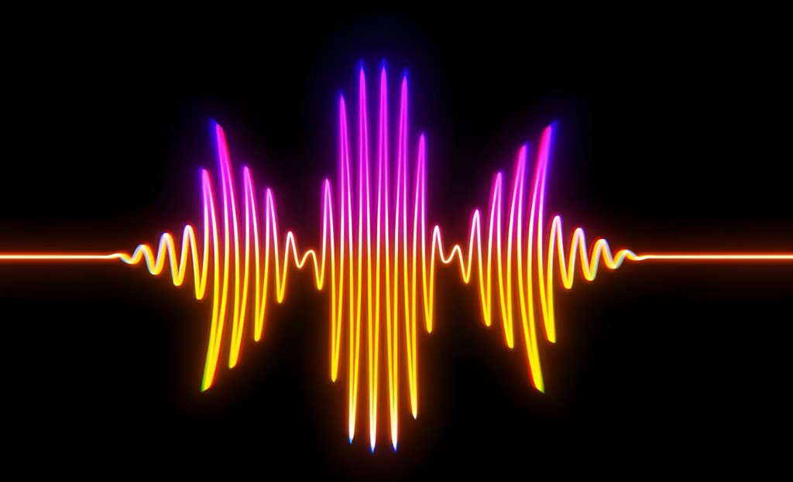
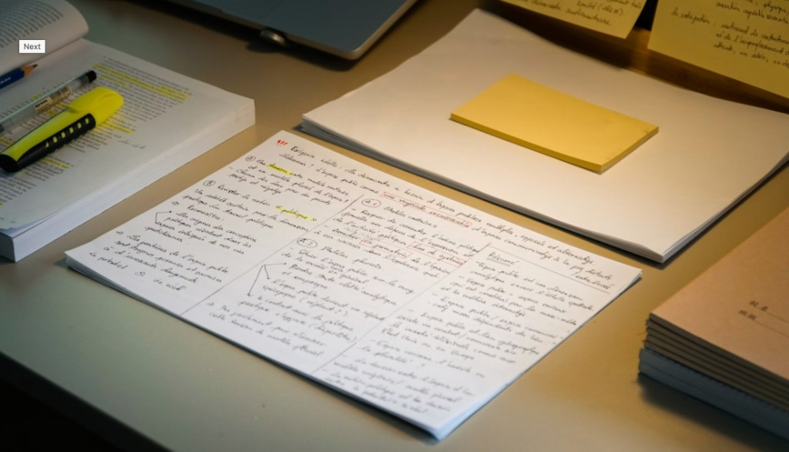

Gemini Hackathon · Tokyo
Learn Japanese from real conversations: live translation now, plus a study coach that turns the audio into flashcards for later.
The stakes
The pressure is real. The learning has to fit real life.
Problem
Solution

Roadmap

← → or tap · 1 / 5
Contour backgrounds inspired by Ralexi · procedural, original code